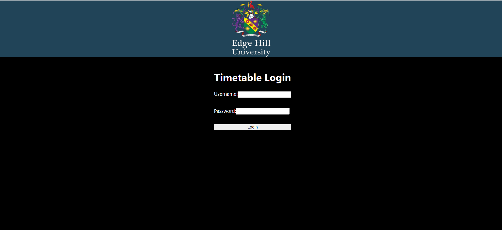
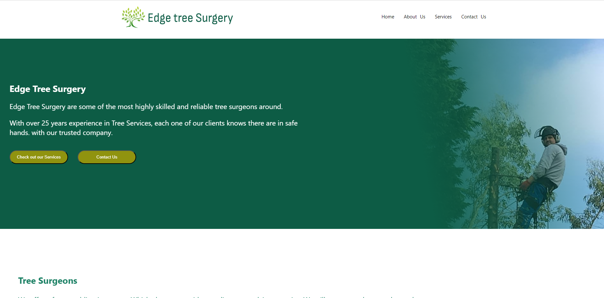
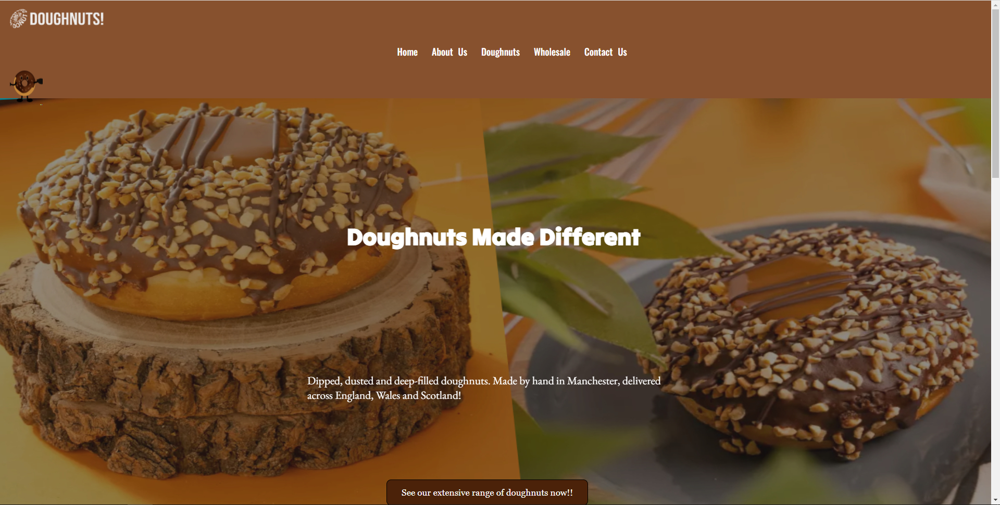
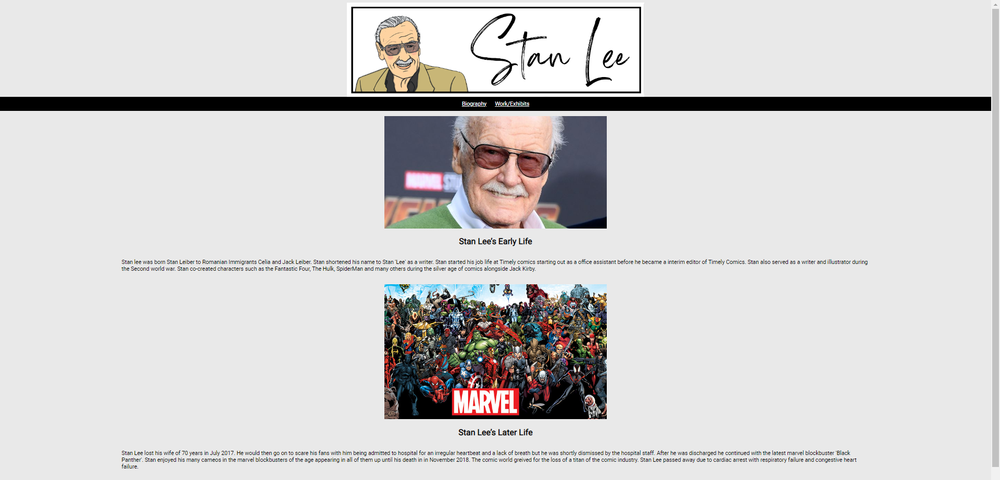

Project Showroom
Speakify Chatbot Using OpenAI api

The rise of AI tools like ChatGPT has led to many software applications integrating AI services into their platforms. For example, companies such as Snapchat have implemented AI chatbots that engage with users and respond to their questions / commands through text.
However, this project uses a subset of Natural Language Processing (NLP) that deals with human-computer interaction through natural language. By utilising Python libraries like Speech recognition, gtts, and pygame, it generates initial and OpenAI API-derived responses.
In simple terms, users can speak with the chatbot, which generates responses in return.
Tech stack -
Student Timetables

Every year Computer Science Department of Edge Hill University creates Student Timetables used within students of all departments of the University as well as staff. However, students often face challenges understanding the timetable in first few weeks of University.
Therefore, I conducted a UX research study on timetables and problems were identified by researching past problems happening with University timetabling and personalisation.
Based on the problems identified via literature research and UX research methods (Persona, questionnaires and user interviews), I created an improved version of timetable which brings clarity within instructions and would help students understand contents of the timetable better.
To use this timetable, visit the website and enter the credentials provided in the GitHub repository's public directory studentlist.csv. Note: The usernames and passwords provided in CSV files are used for testing on this specific project only. The credentials are not affiliated with Edge Hill's actual website.
Design tools / Tech stack -
Edge Tree Surgery Brief (React)

One of my first React Projects on a brief provided by AdTrack. This test website is about tree surgery which offers services such as pollarding, stump grinding, deadwooding etc.
The projects are based on real world live sites. However, requirements provided by adtrak have been modified to not interfere with SEO, performance of each site in this practice scenario case.
Requirements such as good header/footer, call to action, hero banner have been implemented through design thinking. In this process, wireframes and designs were planned using Figma and a web build was created based on the designs.
Design tools / Tech stack -
Doughnuts Website Brief (HTML, CSS, JavaScript)

One of the test doughnuts website created using standard HTML, CSS and JavaScript.
A brief was provided by adTrack which stated the requirements of the doughnuts website. The requirements were taken into consideration and site was built.
Design tools / Tech stack -

"100 Years of Stan" Stan Lee's Centenary Website

To celebrate Stan Lee's contribution in the world of comic books, a website has been created by our team which showcases Stan Lee's Life biography and his work. All the works have been called using the marvel developer API through JavaScript.
The main aspect of the project was to work as a team, create a website as well as take learnings from employability point of view identifying strengths and weaknesses in the learning process.
Design tools / Tech stack -